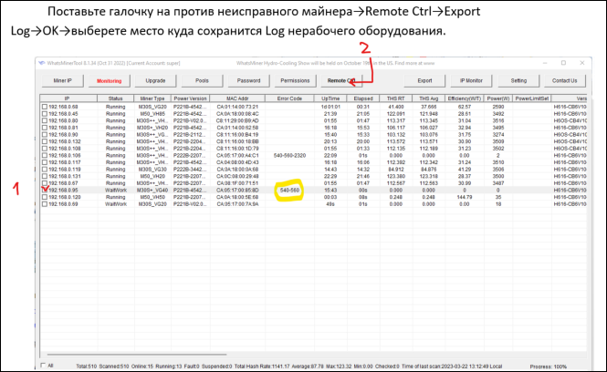
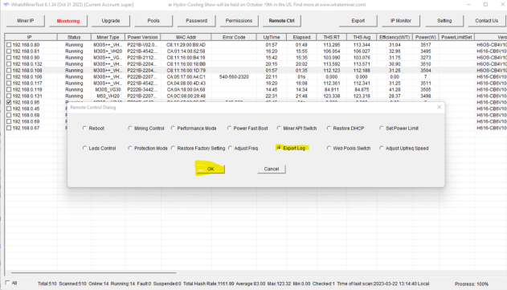
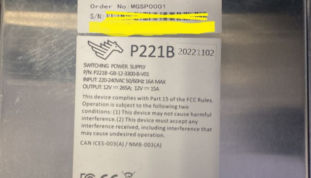

Гарантийное обслуживание
В компании PitBit Mining мы стремимся обеспечить высокое качество обслуживания наших клиентов на каждом этапе использования майнингового оборудования. После приобретения оборудования важно понимать, что наше взаимодействие с вами не заканчивается на этапе продажи. В случаях выявления заводского брака или обнаружения неисправностей аппаратов, мы рекомендуем нашим клиентам пользоваться услугами гарантийных сервисов. Также, если гарантийный срок оборудования истек, мы предлагаем услуги платного ремонта, чтобы вы могли быть уверены в надежной и бесперебойной работе ваших устройств.
Гарантийное обслуживание Antminer от Bitmain
Покупая у нас майнеры Antminer от Bitmain, вы получаете заводскую гарантию на оборудование и возможность воспользоваться сервисными центрами компании Bitmain для ремонта и обслуживания. В случае возникновения проблем с оборудованием в рамках гарантийного периода, наши клиенты могут рассчитывать на оперативную и квалифицированную поддержку этого сервиса.
Шаг 1. Регистрация на сайте Bitmain
- 1. Вам необходимо перейти на вебсайт bitmain.com и нажать на кнопку с изображением силуэта человека. В выпадающем меню необходимо выбрать пункт «Sign Up».
- 2. Вас перенаправит на страницу регистрации, где на выбор доступна регистрация по номеру телефона или Email. Мы настоятельно рекомендуем использовать именно E-mail для этого. Важно проверить гарантию на ваше устройство. Проверить оставшееся количество дней можно в разделе «Customer Support» > «Warranty Check».
- У Вас должно оставаться не менее 15 дней гарантии, не считая срок доставки. Все серийные номера должны быть на месте, без повреждений и на оригинальных наклейках. Контрольная плата, блок питания и все хэшплаты должны соответствовать аппарату, в противном случае с него будет снята гарант
-
- 3. После того как вы ввели телефон/почту и нажали «Register Now», появится дополнительное(второе) окно куда необходимо ввести код подтверждения. В случае если Вы выбрали регистрация по телефону, вам придет СМС с шестизначным кодом. Если же вы предпочли использовать электронную почту, письмо с кодом придет в течение 5 минут. Вам остается только придумать пароль и ввести его в самое нижнее окно
- 4. После того как Вы ввели все данные, вам необходимо завершить регистрацию нажав кнопку «Verification and complete registration»
-
Шаг 2. Заполнение заявки на ремонт
- 1. Чтобы открыть раздел оформления заявки на ремонт, на сайте Bitmain наведите курсор мыши на пункт «Customer Support», после чего выберите в выпадающем списке «Repair Request».
- 2. В появившемся окне, вы соглашаетесь что отправляете на ремонт менее 50 единиц оборудования, кнопкой «Confirm». После чего нажимаете кнопку «Apply for Repair». Обязательно прочитайте правила гарантийного ремонта и проверьте срок длительности гарантии на ваше устройство. Проверить оставшееся количество дней можно в разделе «Customer Support» > «Warranty Check»
- У Вас должно оставаться не менее 15 дней гарантии, не считай срок доставки. Все серийные номера должны быть на месте, без повреждений и на оригинальных наклейках.
- Контрольная плата, блок питания и все хэшплаты должны соответствовать аппарату, в противном случае с него будет снята гарантия.
- 3. Следующим шагом является добавление устройств подлежащих ремонту в пункте «Item Information», для этого Вам достаточно нажать кнопку «Add Device». В открывшемся меню Вы выбираете тип (Туре) устройства - Unit. Принимаются в ремонт только цельные аппараты, так как ремонт отдельных компонентов значительно увеличивает сроки ремонта. В пункте (Item) необходимо выбрать конкретную модель устройства. В третьем пункте (Quantity) необходимо указать количество оборудования. В четвертом поле (Remark) можно оставить примечание.
- 4. Вы можете добавлять несколько разных устройств, но обязательно выбирайте верную модель устройства. Сервисные центры в России пока принимают не все модели, поэтому после добавления устройства проверьте доступность в графе Repairable Repair Site (должна появиться надпись RUSIRKT2, RUS-MOS или RUS-Kazan).
-
5. В пункте «Logistics Information» необходимо указать трек-номер (Tracking No.), которым Вы
отправляете оборудование в сервисный центр. Вы можете заранее оформить отправку через вебсайт
Транспортной Компании (ТК) и получить трек-номер, даже если отправка назначена на другую дату. В
графе (Courier) необходимо выбрать какой ТК вы отправляете оборудование - CDEK или для всех
остальных ТК.
Указывайте только реальный трек-номер.
Доставка в сервисный центр организуется и оплачивается за счет клиента - «до адреса получателя» и «С разгрузочными работами».
Используйте оригинальные коробки, ложементы и антистатические пакеты от аппаратов.
Указывайте время доставки с 14:00 до 17:00. -
-
6. Очень важным шагом является заполнение контактной информации в разделе «Customer
Information», где первым делом нужно нажать кнопку «+ New Address». В появившемся окне,
необходимо заполнить все поля красным символом *. Пожалуйста, используйте свои полные данные и
актуальный номер телефона, по которому можно связаться для уточнения деталей доставки.
После заполнения всех обязательных полей, необходимо нажать кнопку «Submit». - 7. Если Вы ввели все данные корректно, в пункте «Repair Site Information» появится выбор RUSIRKT2 (Иркутск), RUS-MOS(Москва) и RUS-Kazan(Казань). Вам необходимо выбрать нужную нажатием, после чего появятся контактные данные сервисного центра.
- 8. Последним пунктом является «Return Logistics Information» - выбор ТК, которой Ваше оборудование будет доставлено обратно. На данный момент доступен лишь СDЕК, однако по Вашему компания может организовать отправку Вашего оборудования другими ТК. Сервис оплачивает доставку обратно до ближайшего к Вам терминала ТК. Дополнительная упаковка и обрешетка за счет клиента. Отправка оборудования обратно два раза в неделю - среда и пятница.
- В поле «Remark» необходимо оставить серийный номер устройства SN, а так же информацию о поломке. В случае если вся информация заполнена верно, после нажатия Submit появится новое окно «Ticket has been submitted successfully»
-
- После оформления заявки откройте свой тикет (достаточно нажать View Ticket Details), распечайтезаявку (Print), при необходимости дополните её информацией, укажите дату и поставьте подписьвнизу. Вложите подписанную заявку в коробку с устройством в качестве сопроводительного листа.
основные действия для получения гарантийного ремонта:
Самостоятельно проверьте гарантийный срок оборудования и оформите заявку на сайте компании BITMAIN-->Customer TicketID. Support -->Repair Request, получите ответное сообщение с регистрационным номером. Сообщите нам регистрационный номер заявки в Bitmain и получите необходимую информацию для сдачи оборудования на гарантийное обслуживание в нашей компании. Пожалуйста, напишите сообщение в мессенджере WhatsApp абоненту +7 996 968-09-31. Отправьте оборудование транспортной компанией или доставьте самостоятельно в пункт приёма, согласно полученным от нас инструкциям. Дождитесь подтверждения о приёме на диагностику и ремонт. После проведения гарантийного обслуживания мы сообщим о готовности к выдаче или организуем отправку оборудования из сервисного центра.
Гарантийное обслуживание Whatsminer от MicroBT
Майнеры Whatsminer от MicroBT также сопровождаются гарантийным обслуживанием через официальные сервисные центры. Процесс гарантийногообслуживания Whatsminer аналогичен процессу обслуживания Antminer, что позволяет нам обеспечивать высокий уровень поддержки для всех наших клиентов.
Шаг 1. Обращение в Whatsminer
- Обратитесь в официальную техническую службу MicroBT-Whatsminer, чтобы убедиться в конкретной поломке/ошибке и получить подтверждение о возможности гарантийного ремонта данного случая. Контакты для связи с Заводом по гарантийному обращению: Официальный WeChat: whatsminer_service Telegram：https://t.me/Whatsminer_Aftersales
- Через некоторое время после того как вы списались с представителем Whatsminer вас добавят в чат с отделом постпродажного обслуживания. В этом чате нужно описать свою проблему, а также предоставить все необходимые данные: Код ошибки, Логи устройства, Серийный номер оборудования, Серийный номер блока питания, МАС адрес контрольной платы, Серийный номер хэшплаты. Фото примеры будут прикреплены ниже.
- Пример описания ошибок (Hello, SN Miner: Серийный номер майнера. Error 540.(Номер ошибки моет отличаться). Hello, SN PSU Серийный номер блока питания.The miner does not turn on. (Ошибка блока питания. Может присутствовать номер ошибки в поле Errors или майнер совсем не запускается).
-
  
Шаг 2. Регистрация на сайте
- После того как вы связались с технической поддержкой в чате и получили все нужные данные для оформления заявки, вам требуется зарегистрироваться на сайте Whatsminer.
- В правом верхнем углу веб-страницы сайта вы увидите кнопку Login, перейдя по ней вам должно открыться окно входа и регистрации на сайте. При регистрации вы должны указать свои ФИО, номер телефона, адрес электронной почты (вам нужно сразу подтвердить почту, для этого нажмите кнопку Send, дождитесь кода подтверждения и вставьте его в следующую графу), придумайте пароль и напишите его еще раз во второй графе. Пароль не должен содержать пробелы, длинна должна быть между 8-16 символами, а также пароль должен содержать буквы, цифры и специальные знаки. После всего вам остается только нажать кнопку Register.
-
Шаг 3. Оформление заявки
- Следующий ваш шаг это перейти по вкладке Support и нажать кнопку Repair. В новом окне вы нажимаете кнопку Start Repair и уже во всплывающем окне ставите галочку и подтверждаете оформление заявки по всем правилам Whatsminer нажав Confirm. В следующем окне вас встретит выбор сервисного центра. Если вы из Москвы выбирайте пункт с названием M-R. Если же вы из другого города России, то рекомендуем вам проконсультироваться с сотрудниками технической поддержки касательно выбора требуемого сервисного центра. Ниже также будут прикреплены скриншоты по заполнению заявки на ремонт. После завершения оформления Order ID должен быть сохранен или записан. (При желании его всегда можно посмотреть по ссылке: ( https:// www.whatsminer.com/src/views/order-center.html )
-
-
Платное постпродажное обслуживание и ремонт
Как уже и было сказано ранее, PitBit Mining предлагает платное постпродажное обслуживание и ремонт вашего майнингового оборудования. Наши высококвалифицированные специалисты готовы помочь вам решить любые технические проблемы, обеспечивая минимальные простои и максимальную эффективность вашего майнингового бизнеса.
Основные этапы платного ремонта:
- Диагностика оборудования: Мы проведем полную диагностику для выявления всех неисправностей.
- Согласование стоимости: После диагностики мы обсудим с вами стоимость ремонта, включая все необходимые работы и запчасти.
- Ремонтные работы: После вашего согласия наши специалисты приступят кремонту, используя только качественные и оригинальные запчасти.
- Тестирование и возврат: После завершения ремонта оборудование пройдеттестирование, чтобы убедиться в его исправности, и будет возвращено вам готовым к эксплуатации.
Поддержка и консультации
На любом этапе оформления заявок в сервисные центры, а также по любым вопросам, связанным с обслуживанием и ремонтом майнингового оборудования, вы можете обратиться к личным менеджерам PitBit Mining. Мы всегда готовы помочь вам и обеспечить наилучший сервис.
Наша цель - сделать так, чтобы ваше майнинговое оборудование всегда работало на максимальной производительности, а вы могли сосредоточиться на развитии своего бизнеса, доверив все вопросы обслуживания нам.
Ответы на часто задаваемые вопросы:
-
Самые распространенные случаи лишения гарантии - смешанные платы и повреждения, вызванные неправильной эксплуатацией устройства. Так, если Вы хотите "сэкономить" и прислать в сервисный центр один аппарат с неисправными компонентами из других устройств, в системе Bitmain будет видно, что платы не совпадает, и устройство автоматически лишается гарантии. Если же на ваших платах видны следы прогаров, окисления, повреждены дороги или взорваны чипы - это может свидетельствовать как и о разгоне, так и об использовании неоригинального БП. Во всех таких случаях мы отправляем фотографии для подтверждения в Bitmain, после чего проходит списание устройства с гарантии и возвращение клиенту за его счет. Еще одна частая причина лишения гарантии - использование неоригинального ПО, включая прошивки которые можно запустить с флеш-карты
-
Самые распространенные случаи лишения гарантии - смешанные платы и повреждения, вызванные неправильной эксплуатацией устройства. Так, если Вы хотите "сэкономить" и прислать в сервисный центр один аппарат с неисправными компонентами из других устройств, в системе Bitmain будет видно, что платы не совпадает, и устройство автоматически лишается гарантии. Если же на ваших платах видны следы прогаров, окисления, повреждены дороги или взорваны чипы - это может свидетельствовать как и о разгоне, так и об использовании неоригинального БП. Во всех таких случаях мы отправляем фотографии для подтверждения в Bitmain, после чего проходит списание устройства с гарантии и возвращение клиенту за его счет. Еще одна частая причина лишения гарантии - использование неоригинального ПО, включая прошивки которые можно запустить с флеш-карты
-
Самые распространенные случаи лишения гарантии - смешанные платы и повреждения, вызванные неправильной эксплуатацией устройства. Так, если Вы хотите "сэкономить" и прислать в сервисный центр один аппарат с неисправными компонентами из других устройств, в системе Bitmain будет видно, что платы не совпадает, и устройство автоматически лишается гарантии. Если же на ваших платах видны следы прогаров, окисления, повреждены дороги или взорваны чипы - это может свидетельствовать как и о разгоне, так и об использовании неоригинального БП. Во всех таких случаях мы отправляем фотографии для подтверждения в Bitmain, после чего проходит списание устройства с гарантии и возвращение клиенту за его счет. Еще одна частая причина лишения гарантии - использование неоригинального ПО, включая прошивки которые можно запустить с флеш-карты
Получите
профессиональную консультацию.
Оставьте заявку, и наши менеджеры свяжутся с Вами для
проведения консультации